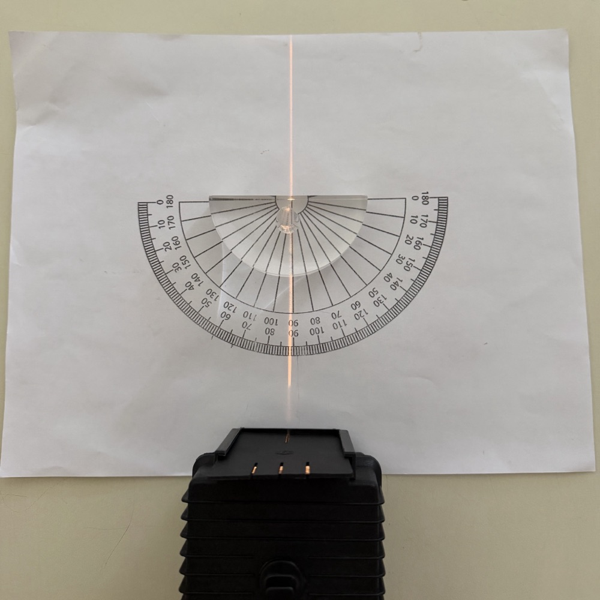
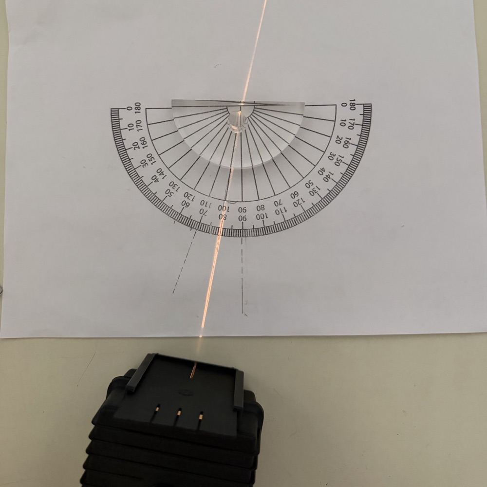
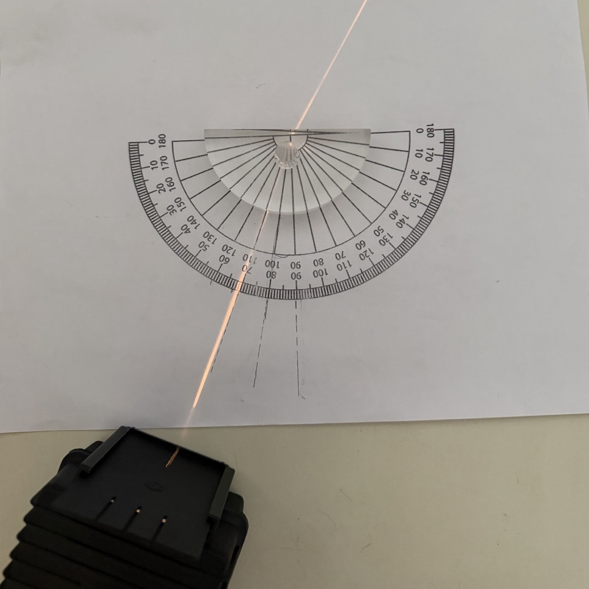
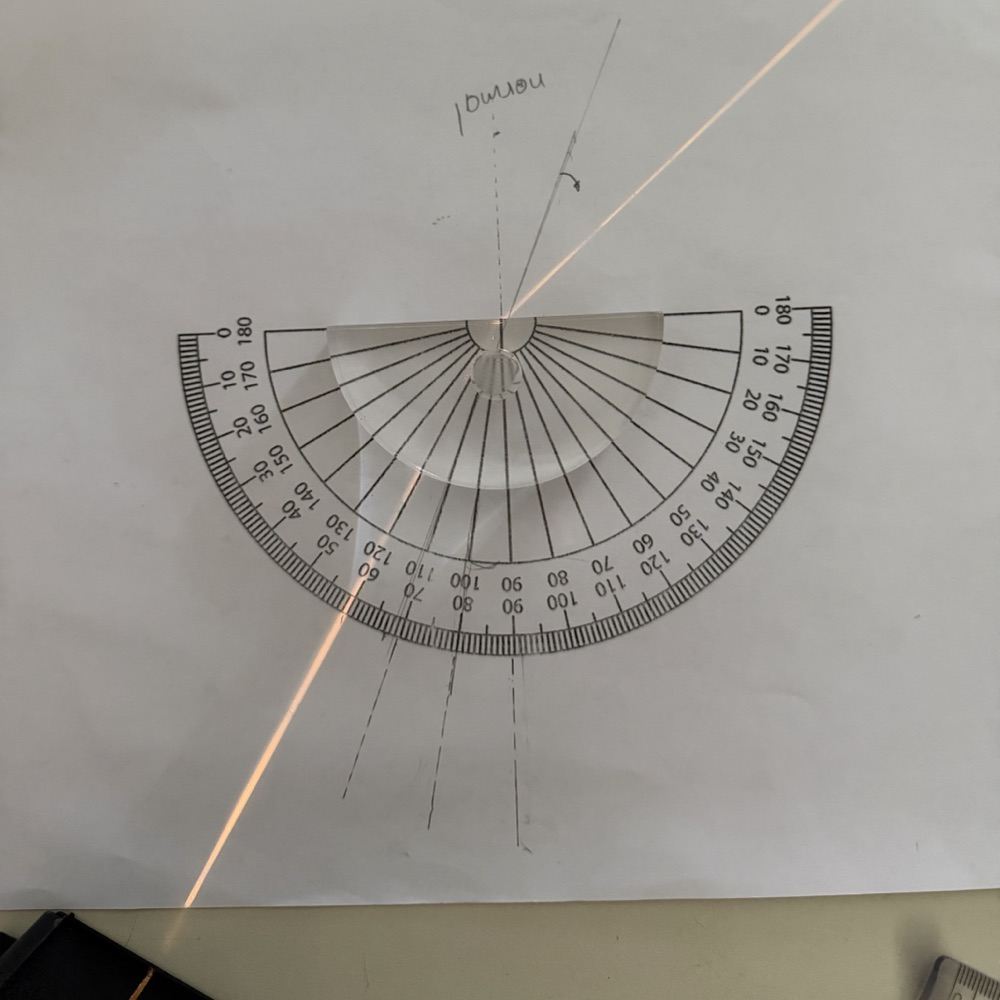
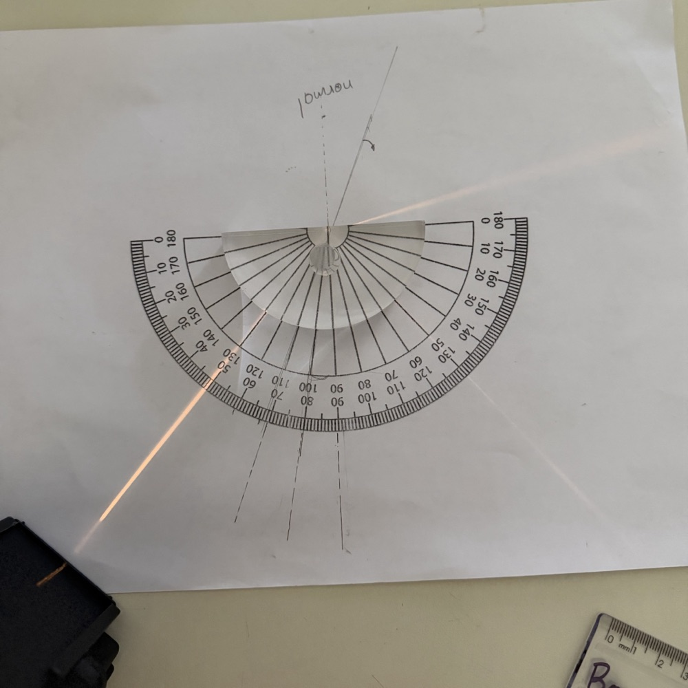
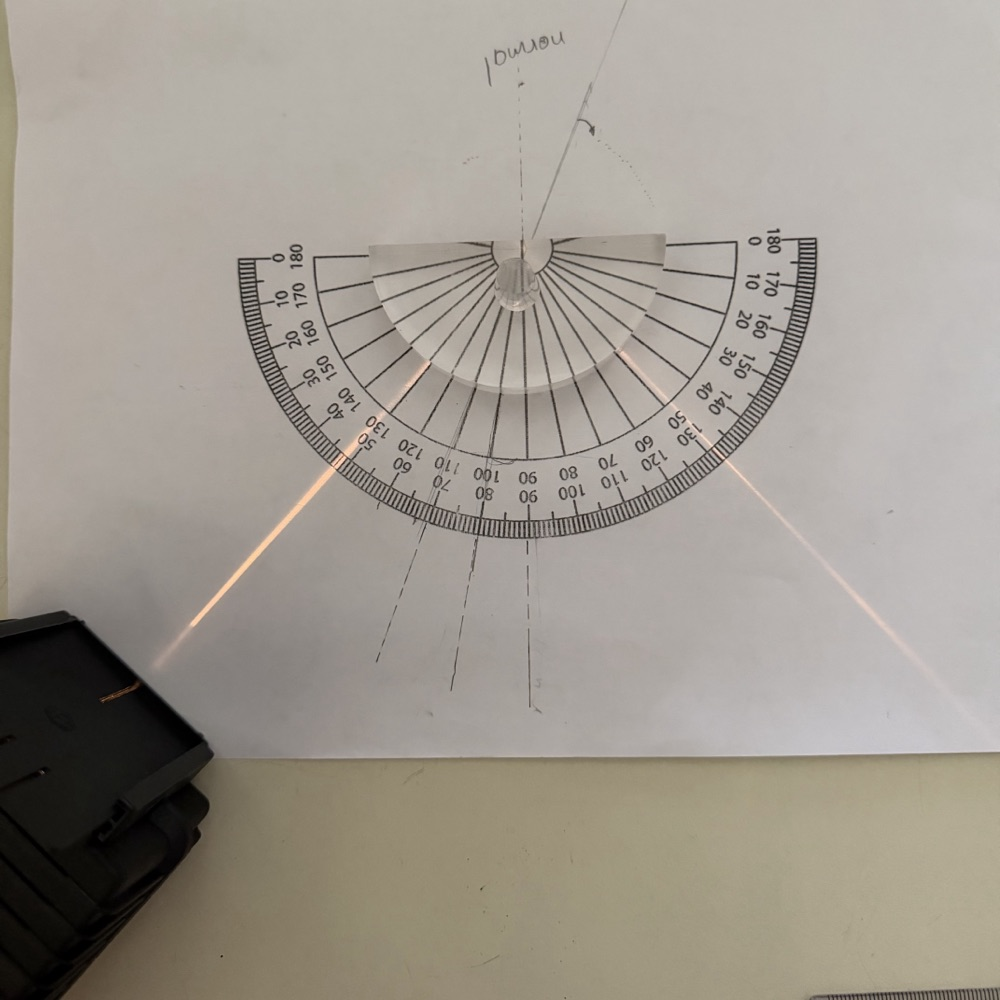

Setup
This is Part II and day two of the sequence. I swap the standard rectangular block from Refraction, Part I for a semicircular acrylic block on the light box. The curved face matters: a ray aimed at the centre of the flat face always enters the curved face travelling straight toward that centre, without bending, so the only angle that ever changes is the one at the flat face, the one we actually care about.
Watching the Angle Increase
Before any formula, I give students the adjustable angle and about ten minutes to move it up from zero and describe what they see happening at the flat face. The same sequence shows up every time:






As the angle grows, the transmitted beam gets dimmer and the reflected one gets brighter, both gradually, energy shifting from one to the other exactly as it does at any boundary. Then, at one specific angle, the transmitted beam doesn't just get dim, it disappears, all at once, and every bit of the light comes back as the reflected beam instead. Past that angle, no adjustment brings the transmitted beam back. That angle is the one this whole lesson is built around.
Finding the Critical Angle
Snell's law already contains the answer, it just needs one specific case plugged in. The transmitted ray vanishes exactly when it would have to leave along the boundary itself, at \(\theta_2 = 90°\), rather than into the second medium at any angle less than that. Set \(\theta_2 = 90°\) in \(n_1\sin\theta_1 = n_2\sin\theta_2\) and solve for the angle of incidence that produces it, now called the critical angle, \(\theta_c\):
\[n_1\sin\theta_c = n_2\sin 90° = n_2 \qquad \Longrightarrow \qquad \sin\theta_c = \frac{n_2}{n_1}\]
This only produces a real angle, and only means anything, when light is travelling from a higher-index medium into a lower-index one, \(n_1 > n_2\). Going the other way, from a lower index into a higher one, \(n_2/n_1\) would be greater than 1, and no angle has a sine greater than 1, there's no critical angle to find, and total internal reflection simply cannot happen in that direction. It is exclusively a higher-to-lower crossing.
For the acrylic block used in this demonstration, increasing the angle until the transmitted beam disappears and measuring where that happens gives a critical angle of about 42°, matching what \(\sin\theta_c = n_2/n_1\) predicts for acrylic meeting air. The class doesn't take that number from a table, it's read directly off the same protractor used for every angle before it.
"Will the Light Escape?"
This is the exact phrasing IB questions use, and it's worth taking seriously as a piece of language before it's treated as a calculation. "Escape" means cross the boundary and continue into the second medium at all, refracted at whatever angle Snell's law gives. It does not mean bright, or undimmed, or unreflected, some of the light reflects at every boundary regardless. The question is only ever yes or no: does any refracted ray exist.
Answering it is a fixed procedure, the same one every time:
After the demonstration, I switch deliberately to a plain "watch me solve this" style and work two or three representative IB questions on the board using exactly this procedure. The point of switching styles is not to abandon the exploratory approach, it's that the board work and the demonstration are answering two different questions. The block showed what happens. The board work shows how to decide it on paper, for a pair of media nobody in the room can hold up to a light box.
Why This Stays Its Own Lesson
Total internal reflection could be squeezed into the end of a lesson on refraction, but IB questions use language precise enough that it earns a full lesson on its own. "Determine whether the light will leave the medium" is carrying the entire four-step procedure above inside one sentence, which medium, which critical angle, which comparison. Guesses about what "the light just can't get out anymore" means cluster in the right direction immediately, but turning that intuition into the specific comparison an exam question is actually asking for is the part that needs practice. The demonstration gives students a real event to attach that vocabulary to, so that later, "will the light escape" calls up the memory of watching a beam disappear at 42°, not just an abstract instruction.
I also keep this total internal reflection video on the class LMS. No commentary, no explanation, just the phenomenon, which makes it worth returning to on its own after the vocabulary is already in place.
Fiber Optic Cables
A fiber optic cable is a practical application of exactly this condition, engineered on purpose rather than encountered by accident. Each fiber is built from two layers of glass or plastic, a central core with a higher refractive index, surrounded by a cladding layer with a slightly lower one. Light injected into the core at a shallow enough angle relative to the fiber's own axis strikes the core-cladding boundary beyond the critical angle every time, so it never leaves the core at all. It reflects internally down the entire length of the fiber, bouncing between the same two surfaces for kilometers, guided by the same \(\theta_1 \ge \theta_c\) condition from a light box demonstration, just repeated continuously instead of checked once.
That's the specific advantage over a copper cable carrying an electrical signal instead of light. Copper loses signal strength to electrical resistance and picks up electromagnetic interference from anything nearby, so the signal needs boosting roughly every hundred meters. A light signal confined by total internal reflection loses only a small fraction of its strength, commonly cited around 3% per hundred meters for modern fiber against roughly 90% for copper over the same distance, and isn't affected by nearby electromagnetic noise at all, since it isn't carried by an electric current in the first place. That difference in attenuation, how much signal strength is lost per unit distance, is why a single fiber run can carry a signal for tens of kilometers before it needs to be regenerated, while copper needs help far sooner.
The Takeaway
The critical angle isn't a separate rule bolted onto Snell's law, it's the one specific case where Snell's law's own answer runs out of room, \(\theta_2\) trying to reach 90° and having nowhere further to go. Every angle below it behaves exactly like ordinary refraction, energy splitting between a transmitted beam and a reflected one. At the critical angle and beyond it, the transmitted beam isn't dim, it's absent, because Snell's law has no answer left to give it.
The closing photograph is worth a careful look for one more reason. Near the critical angle, the escaping beam isn't quite white, it's faintly split into a visible band of colour. That's Refraction, Part I's dispersion showing up again in a new place: violet has a slightly higher refractive index than red in this block, so by \(\sin\theta_c = n_2/n_1\), violet's critical angle is very slightly smaller than red's. In the narrow band of angles between the two, red is still escaping while violet has already crossed into total internal reflection, and the colour smear at the edge of the beam is that separation happening in real time.